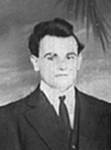

fiche familiale
*******************************************************************************
Delphis-Maxime Bougie
décède à l'âge de 71 ans
Naissance : 11 jul 1840 à St-Lin-des-Laurentides, cté L'Assomption
Décès: 3 nov 1911 à Laverlochère, cté Témiscamingue
En provenance de St-Lin il s'installe
sur les lots #5 et #6 du rang 2 de Laverlochère le 27 novembre 1896.
Père: Louis Bougie
Mère: Agathe Beautron-Major
Mariage le 11 jul 1865 à St-Roch-de-l'Achigan, cté L'Assomption
Épouse: Célina Chaussé
décède à l'âge de 76 ans
Naissance : 24 déc 1847 à St-Lin-des-Laurentides, cté L'Assomption
Décès: 14 mars 1924 à Laverlochère, cté Témiscamingue
Père: Zéphirin Chaussé
Mère: Flore Brien
*******************************************************************************
Enfant 1 Ephrem Bougie
Naissance le 1 mars 1863
Décès: avant 1930 à Montréal
Mariage le 21 juin 1904 à Notre-Dame de Montréal
Conjointe: Yvonne Léonard
Père: Didier Léonard
Mère: Exilda Bougie
------------------------------------------------------------------------------
Enfant 2 Alma-Alina Bougie
décède à l'âge de 90 ans
Naissance en 1866
Décès: en 1956 à Laverlochère, cté Témiscamingue
Mariage le 13 fév 1905 à Notre-Dame-du-Rosaire de Ville-Marie
Conjoint: Arthur Gélineau
Père: Pierre Gélineau
Mère: Elmire Bédard
Mariage le 20 nov 1943 à St-Isidore de Laverlochère
Conjoint: Arthur Gaudet
Père: Théophile Gaudet
Mère: Mathilde Lefebvre
------------------------------------------------------------------------------
Enfant 3 Wilfrid Bougie
décède à l'âge de 61 ans
Naissance en 1869
Décès: en 1930 à Laverlochère, cté Témiscamingue
------------------------------------------------------------------------------
Enfant 4 Ernest Bougie
décède à l'âge de 94 ans
Naissance le 15 jul 1874 à St-Lin-des-Laurentides, cté L'Assomption
Décès: 16 sep 1968 à Lorrainville, cté Témiscamingue
Mariage le 23 nov 1909 à St-Isidore de Laverlochère
Conjointe: Marie-Gracia Legault
n. 11 jun 1888 d. 19 jul 1980
Père: Firmin Legault
Mère: Marie Lasalle
------------------------------------------------------------------------------
|   |
Enfant 5 Armand-Maxime Bougie décède à l'âge de 92 ans. Naissance le 20 avril 1882 à St-Lin-des-Laurentides, cté L'Assomption Décès le 19 mai 1974 à Maison Pie XII de Rouyn-Noranda (ses ancêtres) Mariage le 14 avril 1912 à St-Isidore de Laverlochère Conjointe: Marie-Dolora Barriault n. 25 mars 1895 d. 3 jan 1927 Père: Honoré Barriault Mère: Anna Bourget (sa famille) |
Enfant 6 Donat Bougie
décède à l'âge de 87 ans
Naissance le 18 fév 1884
Décès: 23 mars 1971 à Laverlochère, cté Témiscamingue
Sépulture: au cimetière de Laverlochère
Mariage le 29 jan 1906 à Notre-Dame-du-Rosaire de Ville-Marie
Conjointe: Léontine Lambert
n. 31 août 1884 d. 16 déc 1975
Père: Ludger-Léger Lambert
Mère: Célina Bergeron
------------------------------------------------------------------------------